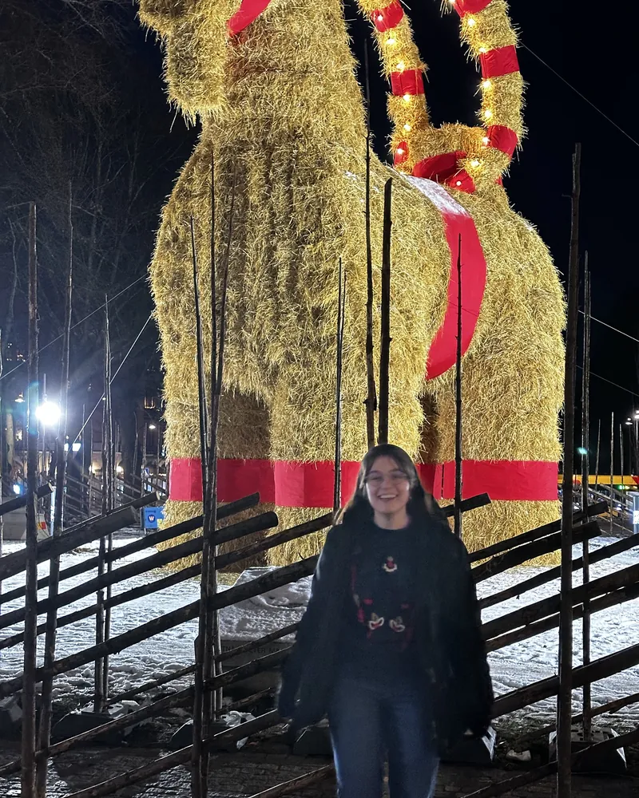
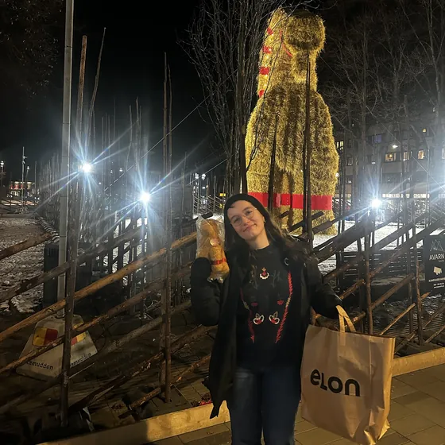
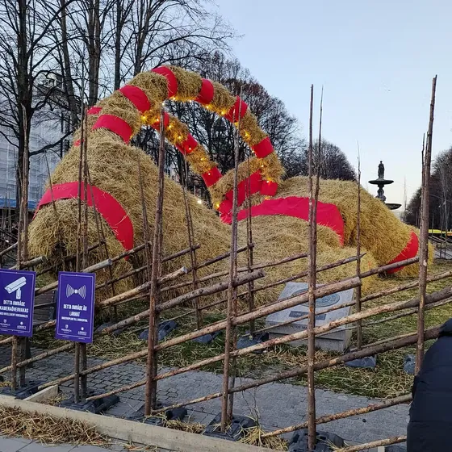
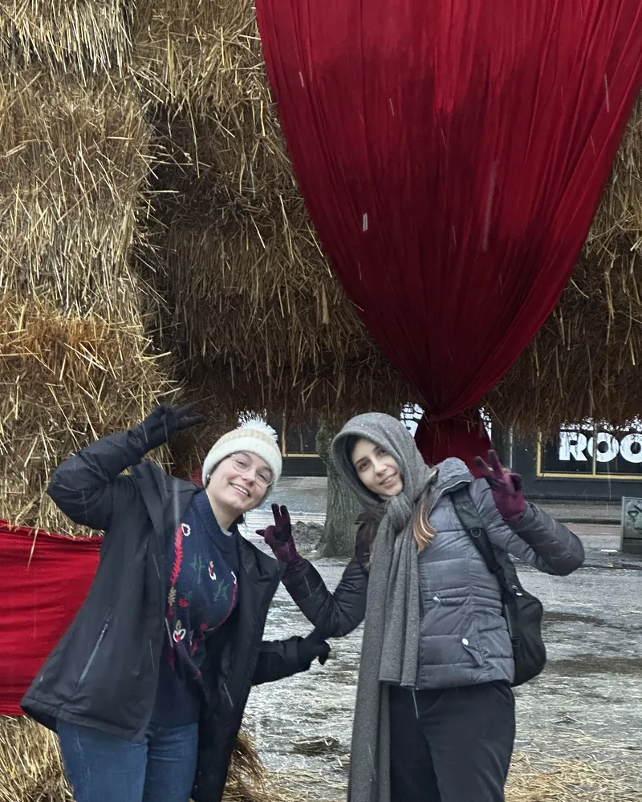

The Gävle Goat
Yule in Gävle, Sweden
A giant straw goat with terrible luck
“This goat never catches a break. If it's not burnt, it's stolen. If it's not stolen, it collapses. It's one of Sweden's precious things, and I really like it. Its fate is not always the best.”
Every Advent since 1966, the Swedish town of Gävle has built a giant Yule goat out of straw, and then spent December hoping it makes it to the New Year. I went to Gävle for Lucia and stopped by to say hello.
- 60 Christmases
- 31 burned
- 20 survived
- 9 other fates


Will the 2026 goat make it?
Countdown to New Year (Swedish time)
It should go up on 29 November, the first Sunday of Advent. We'll see this year.
Happy New Year! Did the goat make it? Check the timeline below.
Goat cam 2026
Lofi beats with the goat
The 2026 livestream will show up here once the goat is standing. I enjoyed studying with the goat and its lofi music in the background.
The goat's YouTube channelEvery goat since 1966
Hover over a year, or tap it, to read what happened. The small goat in front is the students' goat, in the years we know what happened to it.
- Survived
- Burned
- Collapsed or broken
- Stolen
- Other mishaps
- Still to come
- Small goat in front: the students' goat
1960s
-
1966 Burned
The very first goat: 13 m tall and 3 tonnes of straw, on Slottstorget, the castle square. It burned on New Year's Eve.
-
1967 Survived
Made it through the whole season.
-
1968 Survived
Survived, now behind a fence.
-
1969 Burned
Burned on New Year's Eve, even with chicken wire inside it.
1970s
-
1970 Burned
Burned six hours after it was finished, and two drunk teenagers got the blame. It was rebuilt out of lake reed.
-
1971 Smashed to pieces
Smashed to pieces. The merchants who paid for it gave up, and students from the Vasa School built a small goat instead.
-
1972 Collapsed
Sabotage made it collapse.
-
1973 Stolen
Wikipedia says a man stole it and kept it in his back garden, and got two years in prison. Visit Gävle lists its fate as uncertain.
-
1974 Burned
Burned.
-
1975 Collapsed
Wikipedia says it collapsed under its own weight. Visit Gävle lists its fate as unknown.
-
1976 Hit by a car
A student drove a Volvo Amazon into its hind legs, and it collapsed.
-
1977 Probably burned
Most likely burned. Nobody is quite sure.
-
1978 Kicked to pieces
Kicked to pieces.
-
1979 Burned, then broken
Burned before it was even finished. The replacement was broken into pieces.
1980s
-
1980 Burned
Burned on Christmas Eve.
-
1981 Survived
Survived.
-
1982 Burned
Burned on 13 December, Lucia day.
-
1983 Legs destroyed
Someone destroyed its legs.
-
1984 Burned
Burned on 12 December.
-
1985 Burned
Burned in January 1986, despite a 2 m metal fence, security guards and soldiers.
-
1986 Burned
The merchants were back with their first goat since 1971. It burned on 23 December.
The students' goat Built in protest
The students built a smaller goat in protest against the merchants' record attempt. From now on, Gävle has two goats.
-
1987 Burned
Burned, despite heavy fireproofing.
-
1988 Survived
Survived, and for the first time you could bet on its fate with English bookmakers.
-
1989 Burned twice
Burned twice: once before it was finished and again in January.
1990s
-
1990 Survived
Survived, watched over by lots of volunteers.
-
1991 Burned
Burned on Christmas Eve.
-
1992 Burned twice
Burned after eight days, rebuilt, and burned again on 20 December. The arsonist went to jail, and the Goat Committee was founded.
The students' goat Burned
Burned down on the same night as the big goat.
-
1993 Survived
Survived, guarded by taxi drivers and the Home Guard.
The students' goat In the Guinness Book
Measured 14.9 m, beating the merchants' 10.5 m goat, and went back into the Guinness Book of Records. Visit Gävle says it was 16 m.
-
1994 Survived
Survived.
-
1995 Burned
Burned on Christmas Day. A Norwegian was arrested, and the goat was rebuilt.
-
1996 Survived
Survived, now watched by webcams.
-
1997 Survived, slightly damaged
Survived, with some fireworks damage.
The students' goat Survived, slightly damaged
Attacked too, but survived with minor damage.
-
1998 Burned
Burned on 11 December in a big blizzard, then rebuilt.
-
1999 Burned
Burned within hours, and was rebuilt in time for Lucia.
The students' goat Burned
Burned down too.
2000s
-
2000 Burned
Burned in late December.
The students' goat Thrown into the river
Thrown into the Gävle river.
-
2001 Burned
Burned on 23 December by a visitor from Cleveland, Ohio, who was arrested.
The students' goat Burned
Burned down too.
-
2002 Survived
Survived. Visit Gävle says it was completely unharmed, while Wikipedia mentions a failed attempt to set it on fire.
-
2003 Burned
Burned on 11 December. A second goat went up a week later and survived.
-
2004 Burned
In November, hackers took over its homepage and one of its webcams. It burned on 21 December.
-
2005 Burned
Burned on 3 December by vandals dressed as Santa and a gingerbread man, who shot a flaming arrow at it.
-
2006 Survived
Survived, and was hidden away in a secret place in January.
The students' goat Burned
Burned, while the big goat survived.
-
2007 Survived
Survived.
The students' goat Toppled, then burned
Toppled on 13 December, then burned on the night of 24 December.
-
2008 Burned
Passers-by put out a fire on 26 December, but it burned anyway at 03:50 the next morning.
The students' goat Vandalised
Vandalised on 16 December and later taken away.
-
2009 Burned
Hackers knocked its webcams offline, and it burned on 23 December.
The students' goat Stolen
Someone failed to throw it into the river on the weekend of 11 December. On the night of 14 December it was stolen with a lorry.
2010s
-
2010 Survived
Survived a plan to bribe a guard and fly it to Stockholm by helicopter.
The students' goat Survived an arson attempt
Survived an arson attempt on the night of 2 December. Both goats made it to January.
-
2011 Burned
Mild weather melted its protective ice, and it burned on 2 December.
The students' goat Burned
Burned too.
-
2012 Burned
At 23:46 its Twitter account said it was ‘feeling good’. By 23:56 it was on fire.
-
2013 Burned
Burned on 21 December. The arsonists filmed themselves doing it.
-
2014 Survived
Survived at least three arson attempts, then spent most of 2015 in Zhuhai, China.
The students' goat Collapsed
Collapsed, while the big goat survived.
-
2015 Burned
Burned on 27 December. The man arrested later called it an ‘extremely bad idea’.
The students' goat Burned
Burned too.
-
2016 Burned
Burned on 27 November, hours after its 50th birthday party. The students' goat took its place.
The students' goat Hit by a car
Stood in for the big goat on the castle square until a car ran it over on 5 December. It fell over on 27 December and was taken away.
-
2017 Survived
Survived behind a double fence, with cameras and guards.
-
2018 Survived
Survived.
The students' goat Set on fire, still standing
Set on fire on the night of 15 December, but only its left front leg got burned. A man was arrested.
-
2019 Survived
Survived, with guards and a dog patrol watching it day and night.
The students' goat Set on fire, still standing
Set on fire at about 01:20 on 27 December. It stayed standing, only slightly damaged, and a drunk man was arrested.
2020s
-
2020 Survived
Survived. Because of COVID-19, it was inaugurated online.
The students' goat Arson attempt
Someone tried to burn it right after it went up.
-
2021 Burned
Burned on 17 December. The arsonist got six months in prison.
The students' goat Burned
About half of it burned in the early hours of 12 December, five days before the big goat.
-
2022 Survived
Survived in a new spot, Rådhusesplanaden, while its square was rebuilt.
-
2023 Pecked apart by birds
Never burned, but jackdaws pecked it apart for the seeds left in the straw.
-

2024 Survived
Survived. On 13 December, Lucia day, a deepfake video of it burning went viral.
-

2025 Blown over
Storm Johannes, with winds over 40 m/s, knocked it over inside its fence on 27 December.
-
2026 We'll see
It should go up on the first Sunday of Advent. We'll see this year.
The stories come from Visit Gävle's The fate of the Gävle Goat and the year-by-year table in Wikipedia's Gävle goat article. For the students' goat I also used The Local (2016, 2018, 2019), Arbetarbladet, SVT and Sveriges Radio. The icons are my own drawings.


2 photos
The students' goat
Gävle actually has two goats. Since 1986 the town has built two every Christmas: the Gävle Goat, paid for by the Southern Merchants, and a second goat built by the Natural Science Club at the Vasa School. The students first stepped in back in 1971, when the merchants gave up.
Swedish news calls it Lillbocken, the little goat. It has burned at least eight times, ended up in the river, been stolen with a lorry and been run over by a car. In the timeline above, it is the small goat in front.
The goat war
- 1985The students' goat made the Guinness Book of Records at 12.5 m, taking the record from the merchants. Stig Gavlén, who came up with the first goat in 1966, thought that was unfair: it wasn't as pretty as the merchants' goat, and its neck was far too long.
- 1986The goat war. The merchants built a huge goat to win the record back, and the students built a smaller one in protest. When the merchants' goat was measured, it fell short.
- Until 1993Nobody tried for the record again, but the students put up a sign by their goat wishing a Merry Christmas to everyone except the Southern Merchants.
- 1993The merchants tried again with a 10.5 m goat. The students' goat that year measured 14.9 m and went back into the Guinness Book. Visit Gävle says it was 16 m.
Garðabær, Iceland
Its cousin in Iceland
Since 2010, IKEA in Garðabær, just south of Reykjavík, has put up its own straw goat every October, inspired by the one in Gävle. Its luck has not been much better.
- Almost 7 m tall
- 7 to 8 tonnes of straw
- Electric fence since 2013
- Guards and cameras day and night
2010s
-
2010 Burned
Its very first year. It lasted until 23 December, when vandals set it on fire.
-
2011 Blown over
Blown over by heavy winds.
-
2012 Burned
Burned down by vandals.
-
2013 Blown over
It got an electric fence, and the wind blew it over anyway.
-
2014 Survived
Survived without a scratch.
-
2015 Burned
Burned on 26 October, before Advent even started, because of a faulty string of lights. The lights weren't IKEA's.
-
2016 Burned
Set on fire in November by three drunk men, who were caught after a high-speed car chase. It wasn't rebuilt that Christmas.
-
2017 Survived
Survived, with two security guards watching it around the clock.
-
2018 Survived
Survived behind barbed wire, an electric fence and guards.
-
2019 Survived
Survived, even after someone set up a Facebook event to burn it.
2020s
-
2020 Survived
Survived.
-
2021 Survived
Survived. Iceland Monitor says its fence, guards and cameras have kept it safe since 2016.
-
2022 Survived
Survived.
-
2023 Survived
Survived.
-
2024 Survived
Survived. It went up on 9 October, earlier than ever.
-
2025 Survived
Survived.
-
2026 We'll see
Went up in October, ten years after its last mishap. We'll see this year.
Sources: Iceland Monitor's Iceland's Largest Goat Is Well Protected (2021), The Reykjavík Grapevine (2015, 2017), mbl.is (2026) and Wikipedia's Gävle goat article. After 2016 there is no news of any mishap, and mbl.is counts ten years since the last one.
Watch the goat saga
The goat's story, explained
Watch on YouTubeA British TV show walks through the timeline
Watch on YouTubeWatching it collapse
Watch on YouTubeMore goat lore
Watch on YouTubeEven more goat lore
Watch on YouTubeThe 2025 storm, as reported by SVT and Sveriges Radio.